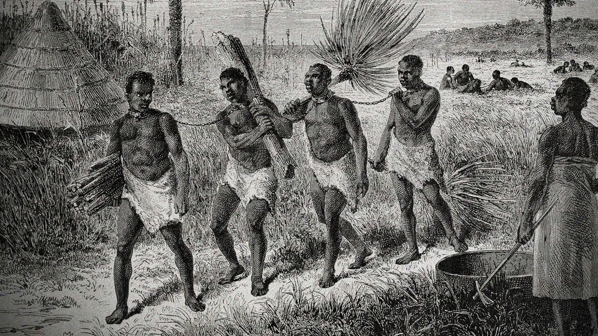
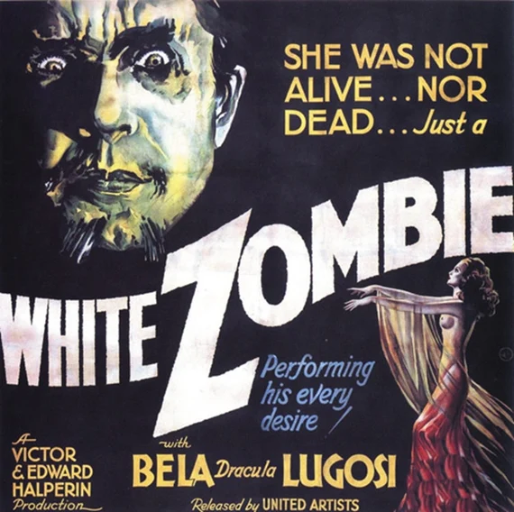
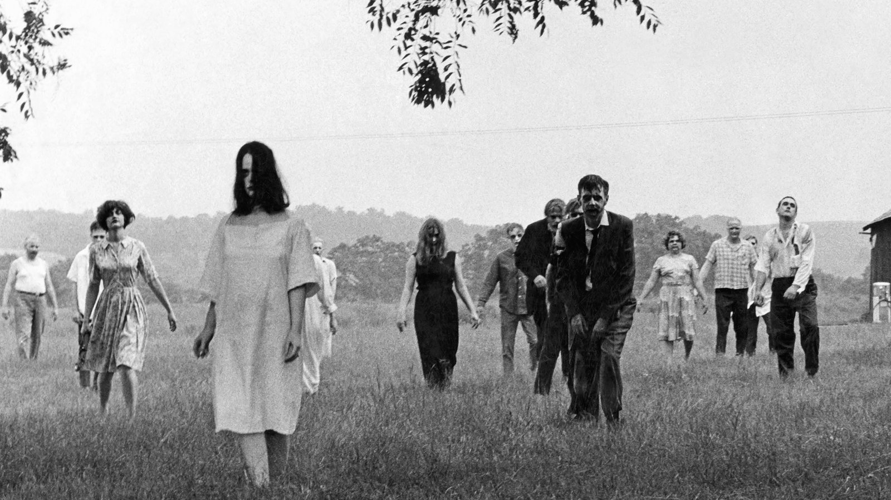

What is a zombie? In Martinique and Haiti it could be a general term for spirit or ghost, any disturbing presence at night that could take myriad forms. But it has gradually coalesced around the belief that a bokor or witch-doctor can render their victim apparently dead – either through magic, powerful hypnotic suggestion, or perhaps a secret potion – and then revive them as their personal slaves, since their soul or will has been captured. The zombie, in effect, is the logical outcome of being a slave: without will, without name, and trapped in a living death of unending labour.
In an essay for The New York Times last year, University of California, Irvine, professor Amy Wilentz called zombies a "very logical offspring of New World slavery." According to Wilentz, because slavery in colonial Haiti was so viciously brutal, death was the only real escape and seen as a way to return to Africa or lan Guinée (which translated means Guinea). As she writes:
"Suicide was the slave's only way to take control over his or her own body ... And yet, the fear of becoming a zombie might stop them from doing so ... This final rest — in green, leafy, heavenly Africa, with no sugarcane to cut and no master to appease or serve — is unavailable to the zombie. To become a zombie was the slave's worst nightmare: to be dead and still a slave, an eternal field hand."
Dawn of the dead
The imperial nations of the North became obsessed with Voodoo in Haiti for one very good reason. Conditions in the French colony were so dreadful, the death rate amongst slaves so high, that a slave rebellion eventually overthrew their masters in 1791. Re-named Haiti from the French Saint-Domingue, the nation became the first independent black republic following a long revolutionary war in 1804. From then on it was consistently demonised as a place of violence, superstition and death because its very existence was an offence to European empires. Throughout the 19th Century, reports of cannibalism, human sacrifice and dangerous mystical rites in Haiti were constant.
The earliest references to zombies in the United States were closely associated with slavery and connected the word to African traditions. The word "zombi" — which for years was spelled without the "e" at the end — first appeared in print in an American newspaper in a reprinted short story called "The Unknown Painter" in 1838.
By 1872, the linguistic scholar Maximilian Schele de Vere would define a zombi as "a phantom or a ghost, not infrequently heard in the Southern States in nurseries and among the servants." But the mainstreaming of the word would begin in 1929, when the travel writer William Seabrook released his book on Haiti and "voodoo," titled The Magic Island, in which Seabrook writes about seeing "voodoo" cults in Haiti and the concept of the zombi to many readers. Several film scholars believe the book was the basis of the classic 1932 horror film White Zombie.
American Pop Culture
The film White Zombie was — as the title suggests — about white, rather than African, zombies. In the film, a young couple named Madeleine and Neil are talked into getting married on a Haitian plantation by the owner, who is secretly plotting to seduce the bride. To that end, he teams up with a local Creole mill owner (played by Bela Lugosi) who gives him a zombie potion to use on Madeline. It is significant that White Zombie appeared in 1932, right at the end of the American occupation of Haiti (the troops left in 1934). America went in to ‘modernise’ a country they considered backward – but instead returned home carrying this ‘primitive’ superstition.
Other zombie films would follow, but they'd rarely take place in Haiti or incorporate the words origins the way White Zombie did. An example is the 1943 horror movie, I Walked With A Zombie, in which a Canadian nurse travels to the fictional Caribbean Island of St. Sebastian to care for the wife of a plantation owner. On arrival, she finds her charge in a zombie-like state and wonders if voudou would cure her.
Modern Concept
1968's Night of the Living Dead is widely considered a landmark film in the genre. Marking the 45th anniversary of the release of the film, Code Switch's Matt Thompson wrote that the film, "set the expectation that [zombie movies] would be a vehicle for stinging social commentary." And that it did so because director George Romero cast a black actor, Duane Jones, as the protagonist. Audiences, at the time, were said to draw a connection between the action on the screen and the fight for civil rights.
Night of the Living Dead dramatizes the bewildering and uncanny transformation of human beings into non-human forms. Indeed, like all metamorphosis narratives, the film carries uncomfortable messages about identity — about what it means to be a human being and about the terror of alienation.
Clearly, it is possible to read many versions of apocalypse into the film. Perhaps the zombies represent, in Freudian terms, the “return of the repressed” — those sublimated aspects of ourselves that we hide from public view.